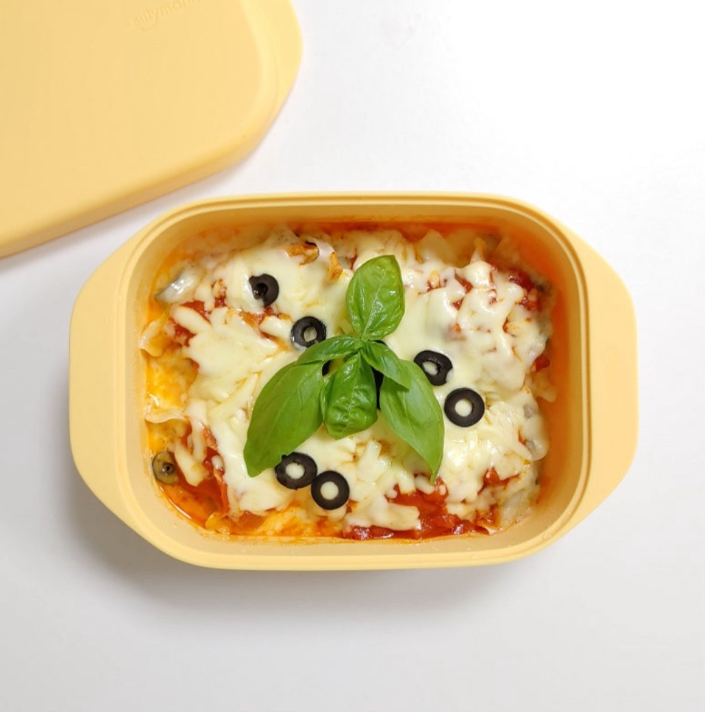

만두피자

🥣 재료
냉동 만두 5~6개
피자치즈 한 줌
케첩 또는 피자소스 2스푼
올리브 (선택)
🧑🍳 만드는 법
만두를 전자레인지에 2분 정도 돌려 살짝 익힙니다.
납작하게 눌러서 넓게 펴줍니다.
그 위에 케첩 또는 피자소스를 바릅니다.
피자치즈를 골고루 뿌려줍니다.
올리브(선택)를 올리고 다시 전자레인지에 1~2분 돌려 치즈가 녹으면 완성!
💡 꿀팁
프라이팬을 사용할 경우, 약불에서 치즈가 녹을 때까지 덮어 익히면 바삭한 식감까지 즐길 수 있어요.
← 레시피 목록으로 돌아가기